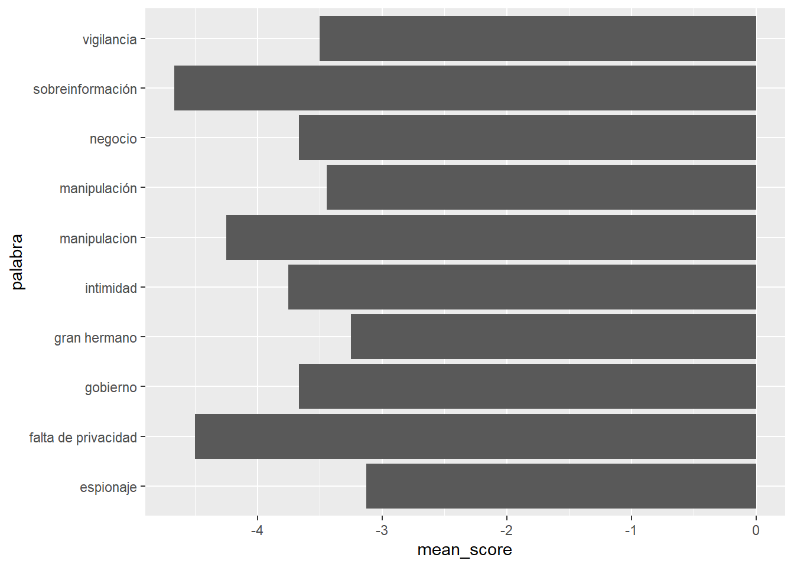
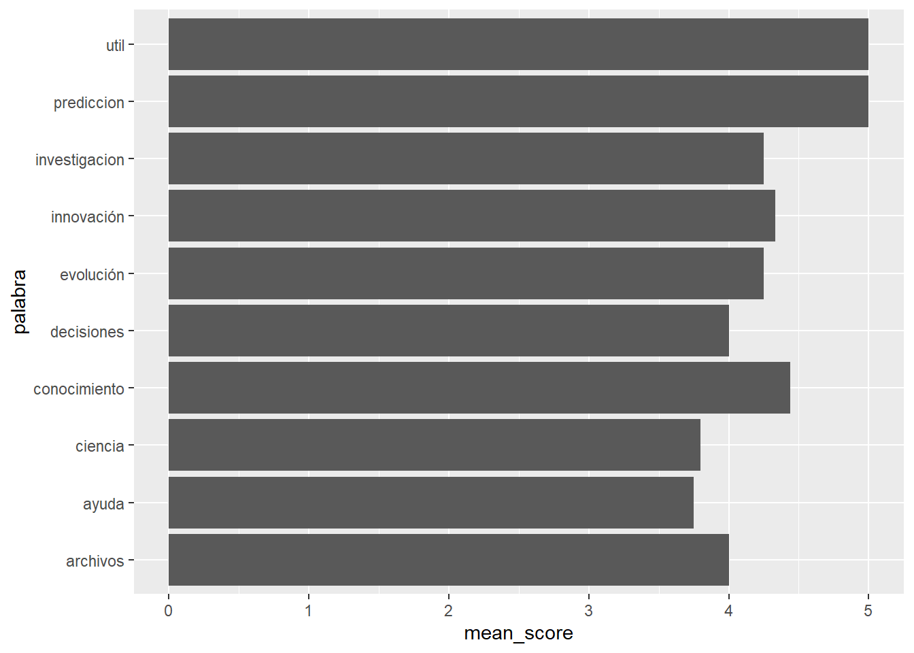
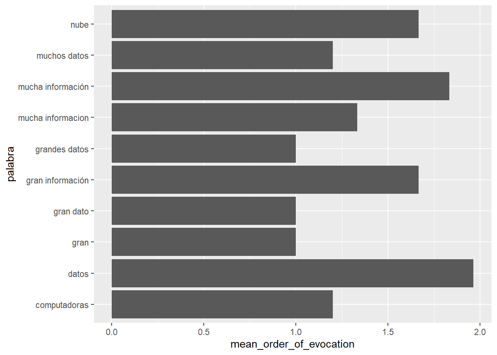
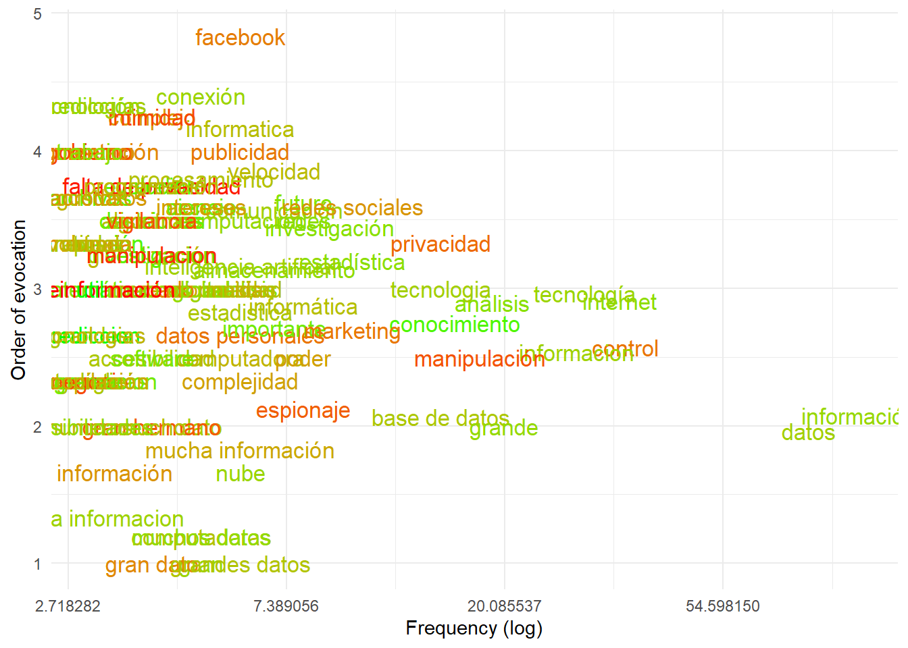
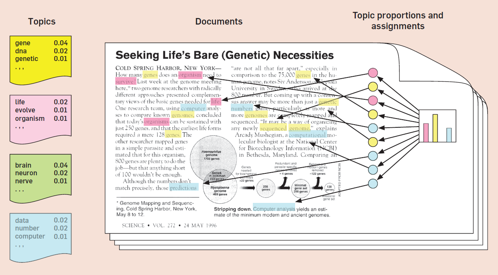
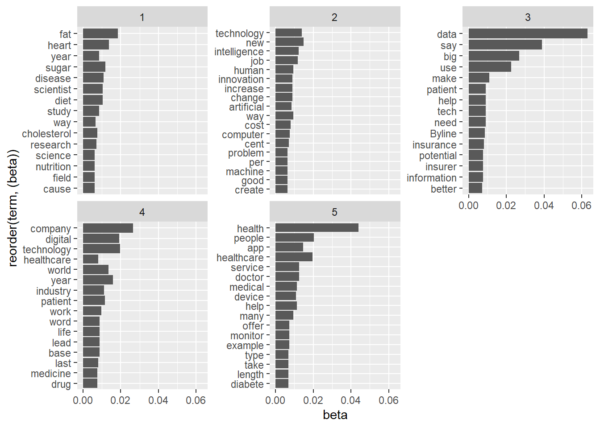

install.packages("readr")
install.packages("tidyverse") UW - Big Data and Data Mining / Data analysis practice
Course presentation and materials
This course proposes a critical approach to the technological, social and cultural phenomenon of big data, together with a practical introduction to data mining and data analysis with R.
Course contents aim to enable students to:
interrogate big data as a technological, social and cultural phenomenon, and recognize key notions in corpus-assisted discourse analysis;
introduce to the working methodology of data analysis and the basics of text mining techniques in R language
About this document
This document is a brief companion to the practical part of the course. It is mainly based on the following resources:
Wickham, H., & Grolemund, G. (2016). R for Data Science. O’Reilly Media. http://r4ds.had.co.nz/
Silge, J., & Robinson, D. (2017). Text Mining with R. A Tidy Approach. O’Reilly. https://www.tidytextmining.com/
(1) Introduction to R & RStudio
We’ll use the R statistical/programming language, RStudio as development environment (you can also use Visual Studio Code), and some packages that will pre-install some handful functions for us.
To download and install R and RStudio, follow these instructions: https://r4ds.had.co.nz/introduction.html#prerequisites
(2) Data analysis with R
The goal of this lesson is to introduce the data analysis workflow. In particular, we will learn to:
load data and resources;
explore and become familiar with the data and its structure;
transform the data to clean it and have the optimal structure for our analyses.
You can check more on these topics here:
https://r4ds.had.co.nz/workflow-basics.html
https://r4ds.had.co.nz/transform.html
We will work with a dataset of free associations to the word “Big data”. This is a dataset built from a brief survey with the following instructions:
Please tell us what words or phrases come to mind when you think of “big data”. We also ask you to please tell us if these ideas that you have just introduced correspond to something that you value positively (something you like) or negatively (something you dislike)
In addition, we have recorded the order in which each word was entered by the participant (a value usually between 1 to 5, although participants could enter more words).
A (simpler) form of this survey can be found here: https://forms.gle/ysyRxvsDHA9r47NH8
With this dataset, and through the indicated tasks, we are going to try to answer the following question: what is the common sense about big data?
The way in which we will analyze the data loosely follows the steps of the “prototypical analysis” from the Social representations theory by S. Moscovici and J. C. Abric.
Load data and resources
The first thing we will do is load some packages that will provide us with a set of functions that we will use throughout the exercise. Remember that a function is a sequence of commands that are applied to an object that is passed to the function, referencing it between its parentheses. For example, we will use the library() function and library names to enable the readr functions to import data, and the tidyverse set of libraries to manipulate and display.
library(readr)
library(tidyverse) ── Attaching packages ─────────────────────────────────────── tidyverse 1.3.2 ──
✔ ggplot2 3.3.6 ✔ dplyr 1.0.10
✔ tibble 3.1.8 ✔ stringr 1.4.1
✔ tidyr 1.2.1 ✔ forcats 0.5.2
✔ purrr 0.3.4
── Conflicts ────────────────────────────────────────── tidyverse_conflicts() ──
✖ dplyr::filter() masks stats::filter()
✖ dplyr::lag() masks stats::lag()We will then import the data with the read_csv() function from the readr package. In RStudio you can list a package’s functions by typing their name followed by ::.
We are interested in keeping this data as an object in memory, since we will be working with it in what follows. To do this, we use an assignment operator <- preceded by the name that we will give to the object.
word_associations <- readr::read_csv(file = "https://raw.githubusercontent.com/gastonbecerra/curso-intro-r/main/data/asociaciones.csv")Rows: 1707 Columns: 4
── Column specification ────────────────────────────────────────────────────────
Delimiter: ","
chr (2): id, palabra
dbl (2): orden, valoracion
ℹ Use `spec()` to retrieve the full column specification for this data.
ℹ Specify the column types or set `show_col_types = FALSE` to quiet this message.Explore the data
The goal of data exploration is to familiarize ourselves with the structure of the data, and transform it in a way that allow us to carry out our analyses. Usually, this is where the cleaning steps are decided.
The first thing we are going to do check the size and structure of our dataset with glimpse(), and the first records with head(), and the basic stats with summary().
This will allow us to know:
the number of records and columns;
the names of the columns and their data type;
the content of the first records;
the range of the numeric fields
glimpse(word_associations)Rows: 1,707
Columns: 4
$ id <chr> "-M0-9OQkabuGoSmceB5E", "-M0-9OQkabuGoSmceB5E", "-M0-9OQkab…
$ palabra <chr> "información", "análisis", "investigación", "comercial", "f…
$ orden <dbl> 1, 2, 3, 4, 5, 1, 2, 3, 4, 5, 1, 2, 3, 4, 5, 1, 2, 3, 4, 5,…
$ valoracion <dbl> 5, 5, 5, 4, -5, 5, 5, 5, 0, -3, 2, 4, 4, 3, 2, 5, 4, 0, 4, …head(word_associations, n = 10) # A tibble: 10 × 4
id palabra orden valoracion
<chr> <chr> <dbl> <dbl>
1 -M0-9OQkabuGoSmceB5E información 1 5
2 -M0-9OQkabuGoSmceB5E análisis 2 5
3 -M0-9OQkabuGoSmceB5E investigación 3 5
4 -M0-9OQkabuGoSmceB5E comercial 4 4
5 -M0-9OQkabuGoSmceB5E filtración 5 -5
6 -M0U7_pJAU9Ehga0LIWq información 1 5
7 -M0U7_pJAU9Ehga0LIWq tecnología 2 5
8 -M0U7_pJAU9Ehga0LIWq sistemas 3 5
9 -M0U7_pJAU9Ehga0LIWq computadora 4 0
10 -M0U7_pJAU9Ehga0LIWq freaks 5 -3summary(word_associations) id palabra orden valoracion
Length:1707 Length:1707 Min. : 1.00 Min. :-5.000
Class :character Class :character 1st Qu.: 2.00 1st Qu.:-1.000
Mode :character Mode :character Median : 3.00 Median : 1.000
Mean : 3.06 Mean : 1.053
3rd Qu.: 4.00 3rd Qu.: 5.000
Max. :14.00 Max. : 5.000 You can also explore the entire dataset using view(). Although not needed for this exercise, in larger datasets you could use some packagess to help you on the exploratory part. I recommend to take a look at skimr.
Now, let’s check our dataset structure with a glimpse. Our table has the words that the participants responded to in the palabra column, the order in which those words were entered by the participant in orden, and a valuation of that idea in valoracion. The id column allow us to bind the records together vertically because our dataset has severalrecords (usually 5) per participant: we have 1 record per word associated to big data. This is called a longer (rather than wider) dataset, and the action to transform this structure is called pivoting. More on this here: https://r4ds.had.co.nz/tidy-data.html#pivoting
Transform, visualize and clean
Now let’s see how we can transform the data to get answers to the following questions:
What are the most frequent words?
What are the words with the most extreme evaluations?
What are the words that were evoked faster?
To answer this we are going to use manipulation verbs (from dplyr, a library included in tidyverse) on our table. Some of these verbs are:
filter()to keep only some records by setting a condition;mutate()to add a column/variable with the result of some operation on other columns;group_by()andsummarise()to perform some operation on the data of different records, *reducing* them by only one by groups;count()which returns the number of records in a group;n()does the same when within a group operation;arrange()sorts the data ascending or descending;
Then, to chain these actions we are going to use an operator called pipe %>% that takes the object on the left and makes it go through the function on its right, returning the result. This makes it easier to think and write code to manipulate an object, since it resembles how we naturally handle objects (we first think of the object, then what we want to do with it).
Now, we have all the elements to answer our questions. It only remains to design a path of operations to make the response visible:
(Step1) We are going to take our table and…
(Step2) …we group records that share the associated word (
palabra), and for each one we will:(Step 3) count the number of records (giving us the frequency);
(Step4) and calculate the mean of their valuations;
(Step5) as well as the mean of the order in which it was evoked;
(Step0) … the result of this operation we are going to store in a new table, which we will then operate to answer our questions.
For these operations we are going to use the commands just seen:
word_associations_frequency <- word_associations %>% # step 0 and 1
group_by(palabra) %>% # (step 2)
summarize(
freq = n(), # (step 3)
mean_score = mean(valoracion), # (step 4)
mean_order_of_evocation = mean(orden) #(step 5)
)
glimpse(word_associations_frequency) Rows: 867
Columns: 4
$ palabra <chr> ".", "...", "0-1-2", "1984", "aa", "abiertos",…
$ freq <int> 3, 2, 1, 1, 1, 1, 1, 1, 1, 4, 5, 1, 1, 1, 1, 1…
$ mean_score <dbl> 0.00, 0.00, 0.00, -5.00, 0.00, 3.00, 3.00, 5.0…
$ mean_order_of_evocation <dbl> 4.0, 4.5, 5.0, 2.0, 5.0, 2.0, 1.0, 2.0, 5.0, 2…If we just order/arrange this table we are already in a position to indicate which are the most/least frequent words.
For this we are going to use slice_max(), which sorts the data and slices it at some position.
word_associations_frequency %>%
slice_max(order_by = freq, n = 10) # A tibble: 10 × 4
palabra freq mean_score mean_order_of_evocation
<chr> <int> <dbl> <dbl>
1 información 102 2.58 2.08
2 datos 81 2.15 1.96
3 control 35 -2.31 2.57
4 internet 34 2.94 2.91
5 tecnología 29 2.45 2.97
6 informacion 28 2.29 2.54
7 grande 20 2.7 2
8 análisis 19 3.11 2.89
9 manipulación 18 -3.44 2.5
10 conocimiento 16 4.44 2.75The most frequently mentioned word was “information”, along with a set of other words that we can say refer to the handling of data mediated by technology, with various products, such as the analysis of information and the generation of knowledge, or the manipulation and control (the only words that have a negative evaluation).
To know the most/least valued words, we must generate other cuts:
word_associations_frequency %>%
slice_max(order_by = mean_score, n=10) # 10 most likeable words# A tibble: 176 × 4
palabra freq mean_score mean_order_of_evocation
<chr> <int> <dbl> <dbl>
1 abundante 1 5 2
2 accionar 1 5 3
3 actualizaciones 1 5 3
4 algo superior 1 5 3
5 almacenamiento de datos 2 5 2
6 amigos 1 5 1
7 amor 1 5 4
8 amplitud de usos 1 5 5
9 análisis datos 1 5 2
10 análisis de grandes masas de datos 1 5 1
# … with 166 more rowsword_associations_frequency %>%
slice_min(order_by = mean_score, n=10) # 10 least likeable words# A tibble: 108 × 4
palabra freq mean_score mean_order_of_evocation
<chr> <int> <dbl> <dbl>
1 1984 1 -5 2
2 acción 1 -5 4
3 acoso mediático 1 -5 2
4 altgorismo 1 -5 4
5 atraso 1 -5 4
6 ausencia de intimidad 1 -5 4
7 avismo 1 -5 4
8 buenas noticias 1 -5 3
9 camdbridge analitycs 1 -5 2
10 campaña politica 1 -5 2
# … with 98 more rowsBeyond the fact that certain themes could be inferred in the words (especially the negative ones), we must ask ourselves if it makes sense to work with idiosyncratic ideas and expressions, introduced by a single participant. Ultimately, the question that guides all our exploration is about the common senses. So, let’s run our analysis again using a filter. Repeating tasks is a scenario that we will have to get used to: the transformation-visualization-cleaning process is iterative.
Also, let’s create our first chart! For this we are using ggplot(), a package and function that follow the grammar of graphics, which states that charts are composed by (at least) 3 elements:
data …
… that we somehow map to visual properties of the chart or “aesthetics” (such as a certain column/variable for a chart axis),
and a representation system or “geometry” (points, bars, areas, etc.)
More on ggplot here: https://r4ds.had.co.nz/data-visualisation.html
word_associations_frequency %>%
filter(freq > 2) %>% # let's filter non-shared words
slice_min(order_by = mean_score, n=10) %>% # 10 least likeable words
ggplot(
data = ., # since the data was passed through the pipe
aes(
y = palabra, # y axis will have the evoked word
x = mean_score, # x axis will have their score
)
) +
geom_col()
word_associations_frequency %>%
filter(freq > 2) %>% # let's filter non-shared words
slice_max(order_by = mean_score, n=10) %>% # 10 most likeable words
ggplot(
data = ., # since the data was passed through the pipe
aes(
y = palabra, # y axis will have the evoked word
x = mean_score, # x axis will have their score
)
) +
geom_col()
Let’s repeat these analysis, now querying the words that were evoked the fastest, meaning the ones with the lower mean_order_of_evocation (OfE)
word_associations_frequency %>%
filter(freq > 2) %>% # let's filter non-shared words
slice_min(order_by = mean_order_of_evocation, n=10) %>% # 10 least likeable words
ggplot(
data = ., # since the data was passed through the pipe
aes(
y = palabra, # y axis will have the evoked word
x = mean_order_of_evocation, # x axis will have their mean OfE
)
) +
geom_col()
These are all ideas that resemble volume, data and information.
Final step! Let’s bind all these analysis together to chart the evocations of “big data” in a way that allow us to visualize its “representational field”. Specifically, we want to:
draw points at the crossing of frequency (X) and order of evocation (Y) (for X we will apply logarithmic transformation, so we can see better the points);
include the words in the graph, so that we can read them;
show the word/idea valuation with fill colors, to quickly identify positive and negative senses (for this we are setting a green/red color palette).
word_associations_frequency %>%
filter(freq > 2) %>%
ggplot(
data = . ,
aes(
x = freq,
y = mean_order_of_evocation,
label=palabra)) +
scale_x_continuous( trans='log' ) +
scale_colour_gradient(low = "red", high = "green", na.value = NA) +
geom_text( aes(size=7 , colour= mean_score),
show.legend = FALSE, check_overlap = FALSE) +
labs(y="Order of evocation", x = "Frequency (log)") +
theme_minimal()
(3) Introduction to NLP and sentiment (lexicon) analysis
The goal of these lessons is to introduce ourselves to natural language processing (NLP), and to a particular task in that field: sentiment or polarity analysis.
Specifically, we will learn to:
pre-process text for further analysis;
cross tables (in our case, sentences and dictionaries);
perform sentiment analysis, including preparing the data for the use of specific libraries.
You can check more on these tasks and topics here:
We will work with a corpus of sentences, extracted from UK newspapers that include the words “big data.”
The goal of our analysis will be to determine if big data is valued as a positive or negative phenomenon, according to the words in its co-text (sentences). Let’s keep in mind that, as Paganoni (2019) suggests,
Big data appears to be framed between two poles—data and information as opposed to rights and privacy—whose gap has of late been emphasized by a number of data scandals affecting business, health and politics, and culminating in the major unforeseen event of Cambridge Analytica and Facebook.
Throughout this tutorial we will work with several libraries, which we can install with the following code:
install.packages(c("readr", "tidyverse", "tidytext"))
install.packages(c("textdata")) Let’s load the data and filter sentences including “big data”. The table includes a column key indicating if our interest keyword is present.
library(tidyverse)
library(readr)
sentences <- read_rds('./data/paganoni_corpus_UK_News_Health_sentences.rds')
sentences_bd <- sentences %>%
filter(key==TRUE) %>%
mutate(sentence_id = row_number()) # inserting an ID for each sentenceSentiment analysis using joins
The goal of pre-processing text is to create a structured dataset that can be computed from an unstructured source, such as natural text. This can be achieved in several ways. In this exercise, we are trying a dictionary-based approach that will consist in looking for a sentiment score for the words of our sentences within a lexicon,and create a general score for our sentences.
In order to do so, we are going to:
tokenize sentences, creating a tibble of their words;
join tables (our sentences and lexicons);
summarize a score for our sentences.
First, let’s decompose our sentences in word tokens. These can be bind back because we are introducing an ID column referencing the sentence (row number) in the original dataset.
library(tidytext)
words_bd <- sentences_bd %>%
unnest_tokens(output = word, input = sentence, token = "words") %>%
select(-key , -file_name) # we're dropping the key columnSecond, let’s prepare our lexicon. We are using generic sentiment lexicons from tidytext package. More info on these can be found here: https://www.tidytextmining.com/sentiment.html#the-sentiments-datasets
library(textdata)
affin <- get_sentiments("afinn") # import the lexicon
glimpse(affin)Rows: 2,477
Columns: 2
$ word <chr> "abandon", "abandoned", "abandons", "abducted", "abduction", "ab…
$ value <dbl> -2, -2, -2, -2, -2, -2, -3, -3, -3, -3, 2, 2, 1, -1, -1, 2, 2, 2…Now, let’s cross tables! In particular, we are interested in seeing if the words that we extracted from our sentences match the words in the lexicons. For this, we will be using _join verbs from the dplyr package. More info on joins: https://r4ds.had.co.nz/relational-data.html#understanding-joins
We will left_jpin() our words_bd and affin (both have the word column). We will include the value column from the latter into the former (and leave blank if absent). Then, we are summarizing these values by sentence.
sentiment_bd <- words_bd %>%
left_join( affin, by = "word" ) %>% # matching by word
group_by( sentence_id ) %>%
summarise(
sentence_value = mean(value, na.rm = TRUE),
sentence_found_words = paste(word[!is.na(value)], collapse = " ")
)
glimpse(sentiment_bd)Rows: 41
Columns: 3
$ sentence_id <int> 1, 2, 3, 4, 5, 6, 7, 8, 9, 10, 11, 12, 13, 14, 15…
$ sentence_value <dbl> 1.250000, 1.000000, -1.000000, 1.500000, -0.25000…
$ sentence_found_words <chr> "growing reach big sophisticated", "big big", "ag…summary(sentiment_bd) sentence_id sentence_value sentence_found_words
Min. : 1 Min. :-1.0000 Length:41
1st Qu.:11 1st Qu.: 0.7500 Class :character
Median :21 Median : 1.0000 Mode :character
Mean :21 Mean : 0.8045
3rd Qu.:31 3rd Qu.: 1.2500
Max. :41 Max. : 2.0000 Let’s explore these results a bit. Let’s find sentences with the highest and lowest ratings. In order to better understand what we are evaluating, let’s re-include the sentences, prior to our pre-processing.
sentiment_bd %>% slice_max(order_by = sentence_value, n = 5) %>%
inner_join(sentences_bd, by="sentence_id")# A tibble: 7 × 7
sentence_id sentence_value sentence_found_words doc_id file_…¹ sente…² key
<int> <dbl> <chr> <chr> <chr> <chr> <lgl>
1 27 2 big wealth BBDGU… BBDGU1… the gu… TRUE
2 16 1.75 big care successful b… BBDFT… BBDFT1… ft.com… TRUE
3 13 1.67 dedicated big attract… BBDFT… BBDFT1… accord… TRUE
4 39 1.6 big intelligent ensur… BBDTL… BBDTL1… and wi… TRUE
5 4 1.5 true big BBDFT… BBDFT1… if wha… TRUE
6 6 1.5 big help BBDFT… BBDFT1… on the… TRUE
7 23 1.5 support big BBDGU… BBDGU1… but it… TRUE
# … with abbreviated variable names ¹file_name, ²sentencesentiment_bd %>% slice_min(order_by = sentence_value, n = 5) %>%
inner_join(sentences_bd, by="sentence_id") # A tibble: 5 × 7
sentence_id sentence_value sentence_found_words doc_id file_…¹ sente…² key
<int> <dbl> <chr> <chr> <chr> <chr> <lgl>
1 3 -1 aggressive big risk BBDFT… BBDFT1… "prope… TRUE
2 9 -1 big catastrophe BBDFT… BBDFT1… "\"big… TRUE
3 12 -1 big suffering imposin… BBDFT… BBDFT1… "a new… TRUE
4 29 -0.5 big risks BBDIN… BBDIN1… "indep… TRUE
5 33 -0.5 big problem BBDIN… BBDIN1… "big d… TRUE
# … with abbreviated variable names ¹file_name, ²sentenceLet’s evaluate the results and make decisions: Are they satisfactory to us, considering our objectives and the use that we will give to this data later? Do we want to introduce ad-hoc rules to improve these results? How many cases are lost by introducing rules? An ad-hoc rule seems to be required: perhaps “big” should not have intrinsic value… let’s repeat filtering this.
sentiment_bd <- words_bd %>%
left_join( affin %>%
filter(word != "big"), # filter "big" from affin
by = "word" ) %>% # matching by word
group_by( sentence_id ) %>%
summarise(
sentence_value = mean(value, na.rm = TRUE),
sentence_found_words = paste(word[!is.na(value)], collapse = " ")
)
glimpse(sentiment_bd)Rows: 41
Columns: 3
$ sentence_id <int> 1, 2, 3, 4, 5, 6, 7, 8, 9, 10, 11, 12, 13, 14, 15…
$ sentence_value <dbl> 1.3333333, NaN, -2.0000000, 2.0000000, -0.6666667…
$ sentence_found_words <chr> "growing reach sophisticated", "", "aggressive ri…summary(sentiment_bd) sentence_id sentence_value sentence_found_words
Min. : 1 Min. :-3.0000 Length:41
1st Qu.:11 1st Qu.:-0.8333 Class :character
Median :21 Median : 1.0000 Mode :character
Mean :21 Mean : 0.4414
3rd Qu.:31 3rd Qu.: 1.6250
Max. :41 Max. : 3.0000
NA's :14 Now that we can intuit the limits and potential of this type of language processing, we are going to carry out these analyzes again, with a much more robust procedure, using functions from libraries or packages.
Sentiment analysis using packages and functions
In what follows we are going to perform sentiment analysis using packages, particularly with txt_sentiment from the Udpipe package from Institute of Formal and Applied Linguistics (ÚFAL)
The general steps when you want to work with package functions are:
consult the documentation;
preprocess the data and transform the objects to fit the function requirements;
use the function and evaluate the results;
Before using the txt_sentiment function we will be doing some pre-processing with a text parser from Udpipe. This is a very useful tool for NLP tasks!
The first thing we need to do is install the library. Then, we must download the model of the language that interests us.
# install.packages("udpipe") # install package
library(udpipe) # load package
model_en <- udpipe::udpipe_download_model('english') # download language model
model_en$file_model # reference to downloaded model
model_en <- udpipe_load_model(file = model_en$file_model) # load language model#| eval: true
#| echo: false
library(udpipe)
model_en <- udpipe_load_model(file = "E:/r/UW - Big Data and Data Mining/english-ewt-ud-2.5-191206.udpipe") # load language modelWith the model we are ready to start parsing our corpus of sentences, and annotate what type of component each word is.
sentences_bd_anotated <- udpipe_annotate(
object = model_en, # language model
x = sentences_bd$sentence, # text to parse and annotate
doc_id = sentences_bd$sentence_id, # sentence id (result will be 1 row per word)
trace = 10
) %>% as.data.frame(.) # convert to data frame2022-09-30 02:41:04 Annotating text fragment 1/41
2022-09-30 02:41:04 Annotating text fragment 11/41
2022-09-30 02:41:05 Annotating text fragment 21/41
2022-09-30 02:41:05 Annotating text fragment 31/41
2022-09-30 02:41:05 Annotating text fragment 41/41glimpse( sentences_bd_anotated )Rows: 1,402
Columns: 14
$ doc_id <chr> "1", "1", "1", "1", "1", "1", "1", "1", "1", "1", "1", "…
$ paragraph_id <int> 1, 1, 1, 1, 1, 1, 1, 1, 1, 1, 1, 1, 1, 1, 1, 1, 1, 1, 1,…
$ sentence_id <int> 1, 1, 1, 1, 1, 1, 1, 1, 1, 1, 1, 1, 1, 1, 1, 1, 1, 1, 1,…
$ sentence <chr> "the fast-growing reach of the internet, big data analys…
$ token_id <chr> "1", "2", "3", "4", "5", "6", "7", "8", "9", "10", "11",…
$ token <chr> "the", "fast", "-", "growing", "reach", "of", "the", "in…
$ lemma <chr> "the", "fast", "-", "grow", "reach", "of", "the", "inter…
$ upos <chr> "DET", "ADJ", "PUNCT", "VERB", "NOUN", "ADP", "DET", "NO…
$ xpos <chr> "DT", "JJ", "HYPH", "VBG", "NN", "IN", "DT", "NN", ",", …
$ feats <chr> "Definite=Def|PronType=Art", "Degree=Pos", NA, "VerbForm…
$ head_token_id <chr> "5", "4", "4", "5", "20", "8", "8", "5", "5", "12", "12"…
$ dep_rel <chr> "det", "compound", "punct", "amod", "nsubj", "case", "de…
$ deps <chr> NA, NA, NA, NA, NA, NA, NA, NA, NA, NA, NA, NA, NA, NA, …
$ misc <chr> NA, "SpaceAfter=No", "SpaceAfter=No", NA, NA, NA, NA, "S…This annotation has taken care of many typical text pre-processing tasks:
tokenization: the sentences were split into words (we can use
doc_idto recreate the sentence);for each word a upos type has been noted;
word are converted to lemmas
We can use upos to filter words. This step is an alternative to removing stopwords and words that do not directly provide semantic content (for example, prepositions). Lemmatization is a procedure that seeks to reduce words to their non-inflected or conjugated form. It is an alternative to stemmization, which attempts to heuristically and iteratively reduce the length of words, removing characters, until they are reduced to their root. Thus, the expression “Google analyzes big data to infer the rate of contagion of the H1N1 flu”, is lemmatized as “google analyze big data to infer the rate of contagion of the H1N1 flu”.
Now, let’s create a final object with only (possibly) meaningful words.
sentences_bd_anotated_meaningful <- sentences_bd_anotated %>%
filter(upos=="ADJ"| upos=="VERB"| upos=="NOUN" | upos=="ADV")
glimpse(sentences_bd_anotated_meaningful)Rows: 779
Columns: 14
$ doc_id <chr> "1", "1", "1", "1", "1", "1", "1", "1", "1", "1", "1", "…
$ paragraph_id <int> 1, 1, 1, 1, 1, 1, 1, 1, 1, 1, 1, 1, 1, 1, 1, 1, 1, 1, 1,…
$ sentence_id <int> 1, 1, 1, 1, 1, 1, 1, 1, 1, 1, 1, 1, 1, 1, 1, 1, 1, 1, 1,…
$ sentence <chr> "the fast-growing reach of the internet, big data analys…
$ token_id <chr> "2", "4", "5", "8", "10", "11", "12", "14", "15", "16", …
$ token <chr> "fast", "growing", "reach", "internet", "big", "data", "…
$ lemma <chr> "fast", "grow", "reach", "internet", "big", "data", "ana…
$ upos <chr> "ADJ", "VERB", "NOUN", "NOUN", "ADJ", "NOUN", "NOUN", "A…
$ xpos <chr> "JJ", "VBG", "NN", "NN", "JJ", "NN", "NN", "RB", "JJR", …
$ feats <chr> "Degree=Pos", "VerbForm=Ger", "Number=Sing", "Number=Sin…
$ head_token_id <chr> "4", "5", "20", "5", "12", "12", "5", "15", "16", "12", …
$ dep_rel <chr> "compound", "amod", "nsubj", "nmod", "amod", "compound",…
$ deps <chr> NA, NA, NA, NA, NA, NA, NA, NA, NA, NA, NA, NA, NA, NA, …
$ misc <chr> "SpaceAfter=No", NA, NA, "SpaceAfter=No", NA, NA, NA, NA…Now, we are ready to do some sentiment analysis with txt_sentiment.
First, we are going to consult the documentation of the package to know what functions we can execute. A good entry point is to check out the vignette, usually a kind of quick introduction to the pack. Another option is to go directly to the function’s documentation, where we will find a description of the parameters and examples.
browseVignettes("udpipe") # vignette
?udpipe::txt_sentiment # function documentationThe txt_sentiment parameters are:
xis the dataframe returned by preprocessing withudpipe;termis the name of the column (insidex) that contains the sentences to parse;polarity_termsis a dataframe that contains 2 columns:termsandpolarity, which can be1or-1. To create this we will use again a lexicon fromtextdatapolarity_negators,polarity_amplifiers,polarity_deamplifiersare vectors of words that negate, increase or decrease the orientation of words (for example, if we have “good” in the lexicon with a rating of 1, and “very” inside the amplifiers, “very good” could assume a higher rating than the one given by the lexicon, with a factor that is made explicit in amplifier_weight). The window of words in which these words are searched is configured withn_beforeandn_after.
Let’s prepare our lexicons and other tables.
polarity_terms <- affin %>%
mutate(polarity = if_else(value > 0, 1, -1)) %>%
select(term=word, polarity)
# let set some basic negators, amplifiers and deamplifiers
polarity_negators <- c("not", "never", "nobody")
polarity_amplifiers <- c("very")
polarity_deamplifiers <- c("less", "almost")All set! Let’s run the function and see the resulting object.
sentiment_bd_functions <- udpipe::txt_sentiment(
x = sentences_bd_anotated_meaningful,
term = "lemma",
polarity_terms = polarity_terms,
polarity_negators = polarity_negators,
polarity_amplifiers = polarity_amplifiers,
polarity_deamplifiers = polarity_deamplifiers)In the case of the object returned by txt_sentiment, there are 2 objects that we can query:
$datawhich has the table resulting from the crossing of the annotated sentences (remember: 1 row x lemma) with the dictionaries and modifiers, giving a final value indata$sentiment_polarity;$overallwhich has the table with the values at the sentence level, including the polarity in$overall$sentiment_polarity;
Let’s look at this last object, to evaluate the results: txt_sentiment sums the word scores per sentence, which makes longer sentences expected to show more extreme polarity. For this reason, it may be convenient to normalize this score by the number of words in each sentence:
sentiment_bd_functions$overall %>%
mutate(sentiment_polarity2=sentiment_polarity/terms) %>%
slice_max(order_by = sentiment_polarity2, n=10) #%>% doc_id sentiment_polarity sentences terms
1: 34 1 1 3
2: 26 4 1 14
3: 32 3 1 11
4: 1 4 1 18
5: 38 4 1 18
6: 7 2 1 10
7: 15 1 1 5
8: 21 3 1 15
9: 14 2 1 11
10: 39 7 1 39
terms_positive terms_negative
1: big
2: big, promise, save
3: big risk
4: big, expand, reach, sophisticated
5: big, help, improvement, smart
6: authority, big
7: big
8: ability, big, huge
9: big, help, smart challenge
10: better, big, ensure, free, improve, intelligent, save
terms_negation terms_amplification sentiment_polarity2
1: 0.3333333
2: 0.2857143
3: 0.2727273
4: 0.2222222
5: 0.2222222
6: 0.2000000
7: 0.2000000
8: 0.2000000
9: 0.1818182
10: 0.1794872 #left_join(sentences_bd, by=("doc_id" = "sentence_id")) %>%
#select(sentiment_polarity2, sentence)
sentiment_bd_functions$overall %>%
mutate(sentiment_polarity2=sentiment_polarity/terms) %>%
slice_min(order_by = sentiment_polarity2, n=10) #%>% doc_id sentiment_polarity sentences terms terms_positive terms_negative
1: 3 -1 1 21 big aggressive, risk
2: 12 -1 1 30 big burden, suffer
3: 5 0 1 20 big, help casualty, risk
4: 8 0 1 20 big, legal challenge, risks
5: 17 0 1 20 big cut
6: 29 0 2 47 big risk
7: 30 0 1 13 big weakness
8: 33 0 1 7 big problem
9: 41 0 1 49 big challenge
10: 28 1 1 23 big
terms_negation terms_amplification sentiment_polarity2
1: -0.04761905
2: -0.03333333
3: 0.00000000
4: 0.00000000
5: 0.00000000
6: 0.00000000
7: 0.00000000
8: 0.00000000
9: 0.00000000
10: 0.04347826 #left_join(sentences_bd, by=("doc_id" = "sentence_id")) %>%
#select(sentiment_polarity2, sentence)Makes sense, right?
(4) Topic modeling
In this exercise we will focus on topic modeling, an unsupervised learning technique that seeks to build topics or themes based on the distribution and correlation of words in a set of documents.
Throughout this exercise we will see:
how to pre-process text for further analysis;
how to build document/terms vectors;
how to model topics;
how to interpret a model.
We will work with a small corpus of news about big data. We will try to see how big data is portrayed and contextualized in news, so topic modeling can assist us in the analysis of discursive frames.
You can check more on these tasks and topics here:
Throughout this tutorial we will work with several libraries, which we can install with the following code:
install.packages(c("readr", "tidyverse", "tidytext", "udpipe"))
install.packages(c("topicmodels", "stopwords" )) About the algorithm: LDA
There are several implementations of topic modeling. We will be using the most common (and basic) algorithm: Latent Dirichlet allocation, via the topicmodels pack.
Topic models draw on the notion of distributional semantics and make use of the so-called bag of words assumption, i.e., the ordering of words within each document is ignored. To grasp the thematic structure of a document, it is sufficient to describe its distribution of words
Maier, Daniel, A. Waldherr, P. Miltner, G. Wiedemann, A. Niekler, A. Keinert, B. Pfetsch, et al. 2018. "Applying LDA Topic Modeling in Communication Research: Toward a Valid and Reliable Methodology." Communication Methods and Measures 12 (2-3): 93–118. https://doi.org/10.1080/19312458.2018.1430754.
This model generates topics by proposing a certain distribution of all the words in the corpus, and calculating the distribution of these topics in each document.

Blei, David. 2012. "Probabilistic topic models." Communications of the ACM 55 (4): 77. https://doi.org/10.1145/2133806.2133826.
What is interesting about this way of understanding topics operational is that each topic can be understood as a semantic field, a set of words that are usually correlated in different documents. Then, when analyzing these results, we will try to infer a theme from the words that contribute the most to each topic. E.g., we could infer from a topic that the terms “sale”, “product” and “buyer” contribute strongly to the topic “trade”. According to one of the model’s authors, the interpretability of most topics is a result of “the statistical structure of the language and how it interacts with LDA-specific probabilistic assumptions” (D. Blei, 2012, p. 79).
At the same time, the words are not exclusive to one topic but cross all topics with a relative contribution. This is precisely what interests us since we want to compare different ways of “contextualizing” the same term (“big data”) across different topics, characterized by the use of certain other words.
The utility of this technique for our purposes has been detailed in this paper:
Jacobi, Carina, Wouter van Atteveldt, and Kasper Welbers. 2016. "Quantitative analysis of large amounts of journalistic texts using topic modelling." Digital Journalism 4 (1): 89–106. https://doi.org/10.1080/21670811.2015.1093271.
Text pre-processing
As in any natural language processing task, we will start by loading the corpus and pre-processing text.
library(tidyverse)
library(tidytext)
library(readr)
corpus <- readr::read_csv(file = './data/paganoni_corpus_UK_News_Health.csv')Rows: 50 Columns: 3
── Column specification ────────────────────────────────────────────────────────
Delimiter: ","
chr (3): doc_id, text, file_name
ℹ Use `spec()` to retrieve the full column specification for this data.
ℹ Specify the column types or set `show_col_types = FALSE` to quiet this message.glimpse(corpus) Rows: 50
Columns: 3
$ doc_id <chr> "BBDFT160304.txt", "BBDFT160401.txt", "BBDFT160516.txt", "BB…
$ text <chr> "\n FT.com\n\n …
$ file_name <chr> "BBDFT160304", "BBDFT160401", "BBDFT160516", "BBDFT161129", …In order to complete our first analyses, we will perform several pre-processing tasks:
We will do a morphosyntatic analysis to determine the different components of the sentence;
We will reduce the words to their lemmas, basic word forms, without gender or conjugation;
We will discard some common words, keeping only the most significant ones.
For these tasks we will work with udPipe package, which we used in the previous exercises.
library(udpipe)
model_en <- udpipe_load_model(file = "E:/r/UW - Big Data and Data Mining/english-ewt-ud-2.5-191206.udpipe") # load language model
corpus_anotated <- udpipe_annotate(
object = model_en,
x = corpus$text,
doc_id = corpus$doc_id,
trace = 10
) %>% as.data.frame(.) 2022-09-30 02:41:07 Annotating text fragment 1/50
2022-09-30 02:41:12 Annotating text fragment 11/50
2022-09-30 02:41:18 Annotating text fragment 21/50
2022-09-30 02:41:18 Annotating text fragment 31/50
2022-09-30 02:41:22 Annotating text fragment 41/50We will use the upos information to filter the words that could be more significant: adjectives, verbs, and nouns. Here we omit the adverbs, since we are not interested in the possible modifications of the meaning between close words, such as negations or amplifications. We will also introduce another filter: we will eliminate very common words in the language, which may not help us to identify a semantic field. For that we use a dictionary of common words, from the stopwords package, and we will eliminate those records with filter().
library(stopwords)
corpus_anotated2 <- corpus_anotated %>%
filter(upos=="ADJ"| upos=="VERB"| upos=="NOUN") %>%
select( doc_id, lemma ) %>%
filter(!lemma %in% stopwords::stopwords(language = "en"))
glimpse(corpus_anotated2)Rows: 9,055
Columns: 2
$ doc_id <chr> "BBDFT160304.txt", "BBDFT160304.txt", "BBDFT160304.txt", "BBDFT…
$ lemma <chr> "pm", "grow", "medical", "tech", "sector", "look", "rude", "hea…Text vectors
Usually machine learning models are trained with data structured in the form of tables. When we work with text we must build these tables from the words of the document with which we are working. We do this with vectoring.
Let’s suppose we have two documents with one sentence each:
Big data is a the set of techniques to analyze and manipulate our thinkingGoogle analyzes big data to infer the rate of contagion of flu.
If we convert the words on these sentences to lemmas and filter important words, they would read as:
bigdata being technical analyze manipulate thoughtgoogle analyze bigdata infer rate contagion flu
Let’s see what these vectorized sentences would look like:
| Doc | bigdata | being | technical | analyze | manipulate | infer | rate | contagion | flu |
|---|---|---|---|---|---|---|---|---|---|
| 1 | 1 | 1 | 1 | 1 | 1 | 0 | 0 | 0 | 0 |
| 2 | 1 | 0 | 0 | 1 | 0 | 1 | 1 | 1 | 1 |
Here we have reduced each sentence to a “bag of words”, which lost the context of formulation of verbal expressions, losing order. We are left with a general vocabulary that, for each sentence, notes the frequency of appearance with 1 and 0. This data that is interpretable by a computer and can be used to train a machine learning model.
With the count() function it is very easy to build a vector, if we use the document id and the words as inputs. We can then convert our word distribution table to this type of object (document text matrix) using the tidytext’s cast_dtm() function.
corpus_dtm <- corpus_anotated2 %>%
count(doc_id, lemma, sort = TRUE) %>%
cast_dtm(doc_id, lemma, n)
corpus_dtm<<DocumentTermMatrix (documents: 50, terms: 2795)>>
Non-/sparse entries: 6079/133671
Sparsity : 96%
Maximal term length: 19
Weighting : term frequency (tf)The DocumentTermMatrix object shows us of the number of documents and unique words, and indicates a % of words that appear 0 times in a document (Sparsity).
Create a topic model with LDA
We are going to build the model with the LDA() function.
An important decision, which must be entered as a parameter to perform the analyses, is the number of topics to generate. Let’s start with a judicious number, quick to test, and easy to examine, and come back to this problem later.
library(topicmodels)
k_topics <- 5 # number of topics
corpus_tm <- topicmodels::LDA(
corpus_dtm,
k = k_topics,
method = "Gibbs", # sampling method
control = list(seed = 1:5, nstart=5, verbose=1000))K = 5; V = 2795; M = 50
Sampling 2000 iterations!
Iteration 1000 ...
Iteration 2000 ...
Gibbs sampling completed!
K = 5; V = 2795; M = 50
Sampling 2000 iterations!
Iteration 1000 ...
Iteration 2000 ...
Gibbs sampling completed!
K = 5; V = 2795; M = 50
Sampling 2000 iterations!
Iteration 1000 ...
Iteration 2000 ...
Gibbs sampling completed!
K = 5; V = 2795; M = 50
Sampling 2000 iterations!
Iteration 1000 ...
Iteration 2000 ...
Gibbs sampling completed!
K = 5; V = 2795; M = 50
Sampling 2000 iterations!
Iteration 1000 ...
Iteration 2000 ...
Gibbs sampling completed!corpus_tmA LDA_Gibbs topic model with 5 topics.Now let’s export these results in 2 formats that we are interested in exploring, using the tidy function, and specifying which probabilities we are interested in:
beta: topic x term probability;
gamma: topic x document probability;
tm_beta <- tidy(corpus_tm, matrix = "beta")
glimpse(tm_beta)Rows: 13,975
Columns: 3
$ topic <int> 1, 2, 3, 4, 5, 1, 2, 3, 4, 5, 1, 2, 3, 4, 5, 1, 2, 3, 4, 5, 1, 2…
$ term <chr> "fat", "fat", "fat", "fat", "fat", "data", "data", "data", "data…
$ beta <dbl> 1.838702e-02, 4.917630e-05, 4.525911e-05, 4.656577e-05, 5.166624…tm_gamma <- tidy(corpus_tm, matrix = "gamma")
glimpse(tm_gamma)Rows: 250
Columns: 3
$ document <chr> "BBDGU160408.txt", "BBDFT160516.txt", "BBDFT160401.txt", "BBD…
$ topic <int> 1, 1, 1, 1, 1, 1, 1, 1, 1, 1, 1, 1, 1, 1, 1, 1, 1, 1, 1, 1, 1…
$ gamma <dbl> 0.71668533, 0.07462687, 0.05731225, 0.05344828, 0.05862069, 0…The results produced by the model can be useful to infer topics. However, this implies an iterative process of interpretation by the researcher, which includes several moments:
labeling and organizing topics;
content analysis;
validation;
As in qualitative designs, we must take into consideration 2 issues: that the different tasks and moments of the analysis are not sequential but rather iterative, and that we will constantly make decisions that affect (forward) and inform (backwards) to other times; that all these decisions will be clearer and more robust if they are the product of consensus between different analysts who work autonomously and who document and exchange the reasons for their decisions.
Labeling and analyzing the model
Labeling is not a different process from qualitative coding, that is, the interactive interpretation of repeated ideas and expressions and the imputation of a code or label that identifies it. In terms of coding, preparing the data for this task is very easy: we simply list the terms that contribute the most to each topic.
tm_beta %>% # terms
group_by(topic) %>%
top_n(15) %>%
ungroup() %>%
arrange(topic, -beta) %>% # vamos a mostrarlo como grafico
ggplot(aes(x=reorder(term, (beta)),y=beta)) +
geom_col() +
facet_wrap(~topic, scales = "free_y") +
coord_flip()Selecting by beta
The goal of this analysis is to (manually) evaluate if there is a coherent field of words in each topic, and assign a label that describes it.
topic_names <- rbind(
c(topic = 1 , nombre = "1. diet"),
c(topic = 2 , nombre = "2. jobs"),
c(topic = 3 , nombre = "3. insurance"),
c(topic = 4 , nombre = "4. medical industry"),
c(topic = 5 , nombre = "5. health and care")
) %>% as_tibble() %>% mutate(topic=as.integer(topic))It is important to bear in mind that not all topics will always present a coherent semantic field: in many cases they can refer to regularities typical of the type of communication that we are analyzing, or a mixture of words such that instead of allowing us to infer a univocal field (incoherent).
Next, we need to organize our topics:
Should we discard irrelevant topics?: We can decide to filter out other topics that are irrelevant for our research purposes.
Should we group topics?: Generally, in qualitative coding, this process is done in iterations, making more abstract and coherent inferences, allowing us to move from the codes to themes and arguments. The LDA model does not have this hierarchical structure, but we can group or collapse topics into more general themes. This is almost always necessary when working with higher Ks.
Content analysis
One of the main benefits of TM is that it allows the researcher to perform a quick exploration of the corpus, inferring a probable way to organize and classify the documents, thus facilitating subsequent tasks, such as comparisons between documents, or between other corpus. Certainly these types of automatic techniques do not replace content analysis and the researcher’s interpretation, but they can, however, complement them in a mixed research design. TM can be useful either in an inductive phase, contributing to the first explorations of the corpus, or by triangulating results to support the researcher’s hypotheses.
Topic models must find what we know is there. Ultimately, a topic model’s trustworthiness must be determined by informed human judgments. In particular, the model must find the broad trends and facts known to be true by the practitioner of the domain. Without such support in finding the known, topic models have limited value in discovering the unknown — i.e. quantifying known trends or discovering unexpected ones.
Ramage2009
In any cases, we should select a few representative documents to perform qualitative analysis.
Let’s create a small sample, by identifying documents with highest probability in each topic using tm_gamma. Let us assume that with 5 documents we can perform our analyses (in qualitative samples, this number is not an a priori decission).
tm_gamma %>%
group_by(topic) %>%
slice_max(gamma, n=5)# A tibble: 25 × 3
# Groups: topic [5]
document topic gamma
<chr> <int> <dbl>
1 BBDGU160408.txt 1 0.717
2 BBDTI170719.txt 1 0.238
3 BBDEC180201.txt 1 0.238
4 BBDFT180204.txt 1 0.237
5 BBDIN170512.txt 1 0.222
6 BBDIN161127 BIS.txt 2 0.579
7 BBDIN170410.txt 2 0.543
8 BBDTL170504.txt 2 0.431
9 BBDTI170819BIS.txt 2 0.24
10 BBDGU170505.txt 2 0.229
# … with 15 more rowsModel validation
At the time of validation, we seek to find out how solid our interpretation of the model is.
One way to validate our model and inferences, we could propose some content and metadata hypothesis for further exploration. This could be data not used in the model construction, e.g., document publication date, or publisher information).
For its part, statistical validation seeks to measure how reliable the model is, in terms of how consistent its results are.
Perplexity is the most used measure in this type of tests. This is a metric that results from a held-out likelihood test in which, once the model has been trained with certain parameters, it is used to predict the topics of “new” documents for the model, that is, documents that were not part of the model construction. of the corpus with which it was trained. This generally is done for estimating different models with different parameters, like the number of topics (K). We could separate some documents from our corpus to have “new” documents, and train several TM models with different values of K; finally, we are going to plot the results of the perplexity tests. Since perplexity is a measure of inconsistency, a lower value is appropriate. Generally these values are achieved at a higher K.
(5) Corpus building
xxx
Other materials
It would be good to mention the using of legal knowledge bases from the big data perspective. They are available mostly in national languages but the EU Eurolex and Curia are available in all official EU languages.
https://eur-lex.europa.eu/homepage.html?locale=pl
https://curia.europa.eu/jcms/jcms/Jo1_6308/
https://www.echr.coe.int/Pages/home.aspx?p=caselaw/HUDOC&c=
https://www.ilo.org/inform/online-information-resources/databases/terminology/lang--en/index.htm
https://op.europa.eu/pl/web/eu-vocabularies/det
https://unimelb.libguides.com/c.php?g=929605&p=6716619
https://www.icj-cij.org/en/cases
https://hudoc.echr.coe.int/eng#{%22documentcollectionid2%22:[%22GRANDCHAMBER%22,%22CHAMBER%22]}
abstracts de articulo de law